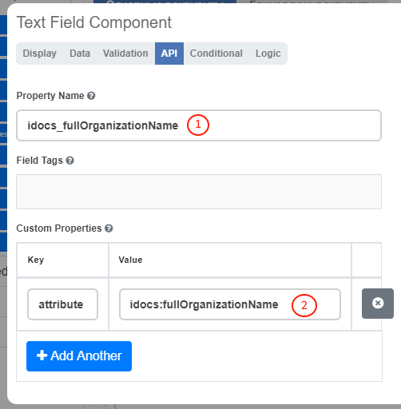
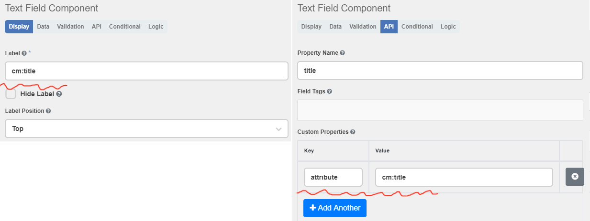
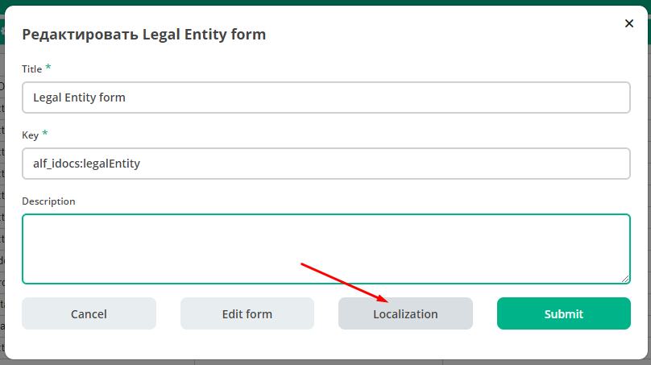
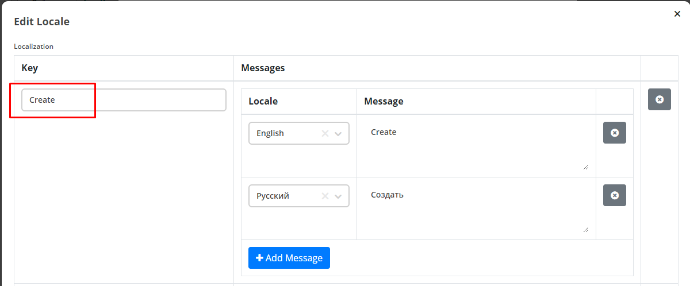
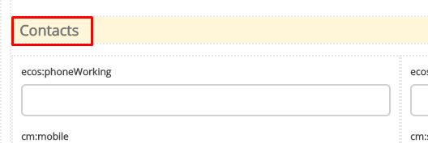
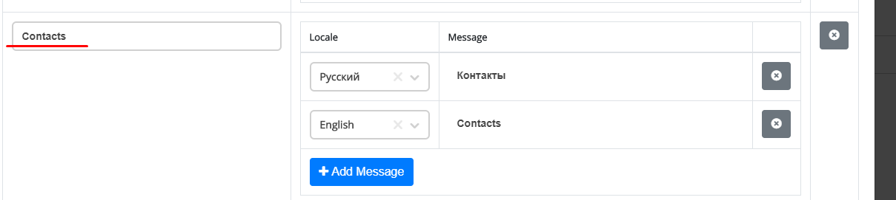

Формы¶
Новые формы ECOS реализованы на базе движка formiojs.
Функция редактора форм доступна только в ECOS Enterprise.
Формы описываются в
jsonформате.Формы используются для редактирования записей из Records Service (см. ECOS Records). На бэкэнде редактирование записи может восприниматься как создание новой (например если не указан ID редактируемой записи).
Существуют две системные формы, которые изменять не желательно:
Форма для создания и редактирования других форм. Ключ:
ECOS_FORM;Форма по-умолчанию. Она используется как отправная точка если мы создаем новую форму. Ключ:
DEFAULT.
Атрибут - это собиртельный термин, который относится и к свойству и ассоциации и к дочерней ассоциации и к системным свойствам;
Связь с типом Alfresco¶
Если мы хотим создать форму для создания или редактирования типа Alfresco, то следует создать форму с ключом, который сформирован по следующему шаблону: alf_{{ТИП-ALFRESCO}}. Например: alf_idocs:contractor.
Связь с типом ECOS¶
Если нужна форма для создания/редактирования/просмотра записи с типом ECOS следует задать ключ по следующему шаблону: type_{{TYPE_UUID}}/{{KIND_UUID}}.
Если вид не важен, то его можно не задавать и сделать ключ: type_{{TYPE_UUID}}. Например:
Для типа+вида: type_contracts-cat-doctype-contract/contracts-cat-contract-services
Для типа: type_contracts-cat-doctype-contract
В консоли браузера можно проверить список возможных ключей форм для записи следующим скриптом:
Citeck.Records.get('workspace://SpacesStore/86f922df-924a-46a6-a9e3-e34ddb96ef7d').load("_formKey[]?str").then(console.log)
Связь с атрибутом записи (ноды alfresco в частном случае)¶
Для простых полей мы можем выставить Property Name (1) в соответствии со свойством записи, но если нужно связать с атрибутом, в котором есть спец символы (например «:»), то следует добавить в Custom Properties свойство (2) с ключом attribute и значением - именем атрибута.
Пользовательский модуль¶
В json описании формы можно добавить поле customModule, в котором записать путь до javascript модуля, который будет создан вместе с формой. В этом модуле можно разместить сложную логику, которую в последствии вызывать из скриптов формы. Для примера см. ecos-eform-repo/src/main/resources/alfresco/module/ecos-eform-repo/ecos-formsecos-form.json
Если в customModule будет метод init, то он будет вызван с текущей формой в аргументах.
Конфигурация ecos-forms-enable¶
В ECOS конфигурации добавлен параметр ecos-forms-enable, который позволяет глобально отключать новые формы для создания нод. По-умолчанию данный параметр включен.
Проверка новых форм¶
Чтобы открыть конкретную форму для редактирования или создания следует в консоли браузера выполнить следующий скрипт:
Citeck.forms.eform('wftask@activiti$875', {params:{formKey:'DEFAULT'}})
Первый аргумент - RecordRef, кототорый будет редактироваться.
Параметр formKey - ключ формы, которую следует открыть.
Создание формы с нуля¶
Служебные данные формы¶
Form Builder¶
Компоненты формы¶
API¶
Display (Отображение на форме)¶
Validation (Связь с моделью)¶
Условия отображения¶
Logic¶
Layout (Отображение в HTML?)¶
Локализация¶
Все Label у полей на форме перед рендером проходят через этап локализации. Если ключа локализации не найдено, то рендерится строка, которая записана в поле Label у поля.
Локализация в новых формах может быть в 4 видах:
1. Глобальная локализация
Вся локализация, которая имеет префикс ecos.forms. попадает в новые формы. Например ecos.forms.someTitle=»123» попадет в формы в виде: {«someTitle»:»123»}.
На момент 16.05.19 в качестве глобальной локализации используется локализация из site-messages/*.properties файлов *-share модулей.
2. Локализация атрибутов
Если Label у поля совпадает с редактируемым атрибутом, то происходит запрос на сервер за заголовком для такого поля. Если заголовок найден, то поле будет локализовано.
3. Локализация формы
В json конфигурации формы можно задать локализацию, которая будет действовать только в пределах данной формы. Пример:
Такой вариант подходит, если требуется добавить пользовательскую локализацию для сообщений об ошибке, подсказок и т. д. Чтобы установить локализацию, необходимо перейти на форму Localization и поместить свою локализацию туда. После чего её можно будет использовать на самой форме по ключу. Для именования ключей лучше всего использовать символы латиницы.
 Пример локализации панели: Чтобы установить локализацию для панелей (Layouts -> Panels), можно воспользоваться функциями Localisation, достаточно прописать их как показано ниже.
 4. Локализация подсказок
Чтобы локализовать подсказки к атрибутам, необходимо следующее:
Написать саму локализацию в форме. Ключ для локализации можно выбрать на своё усмотрение (не нужно писать ключи с пробелами, они могут не спарситься). Пример локализованной подсказки:
Прописать ключ в поле для подсказки Tooltip.

В итоге получим локализацию подсказок: